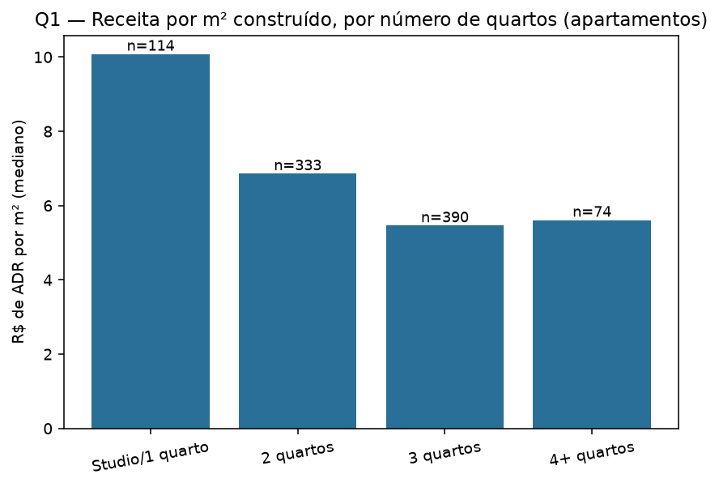
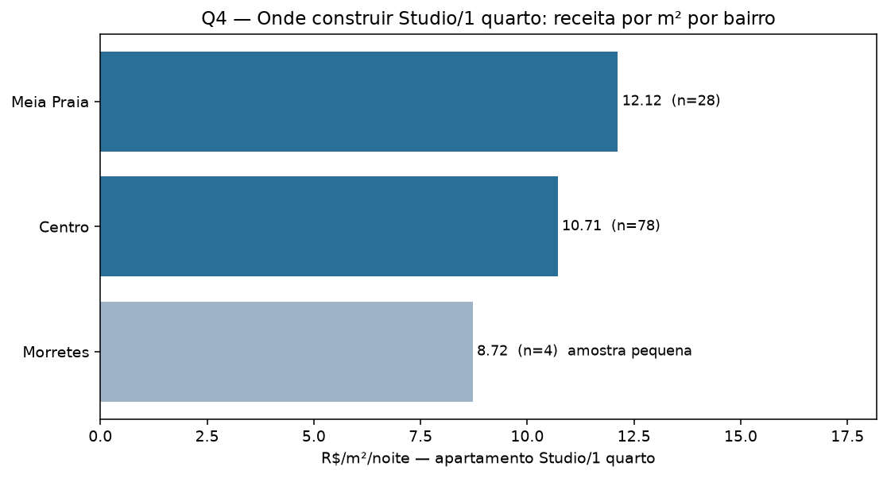
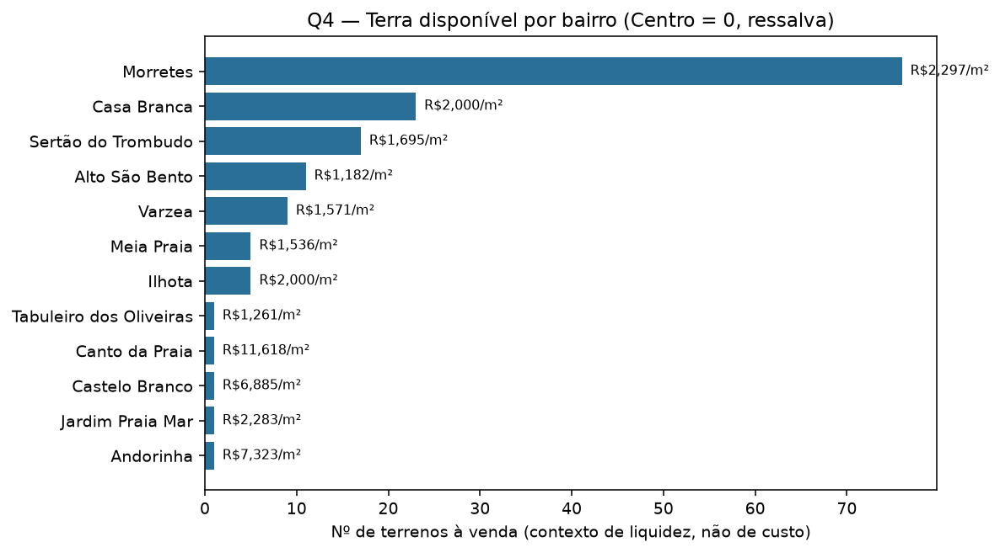
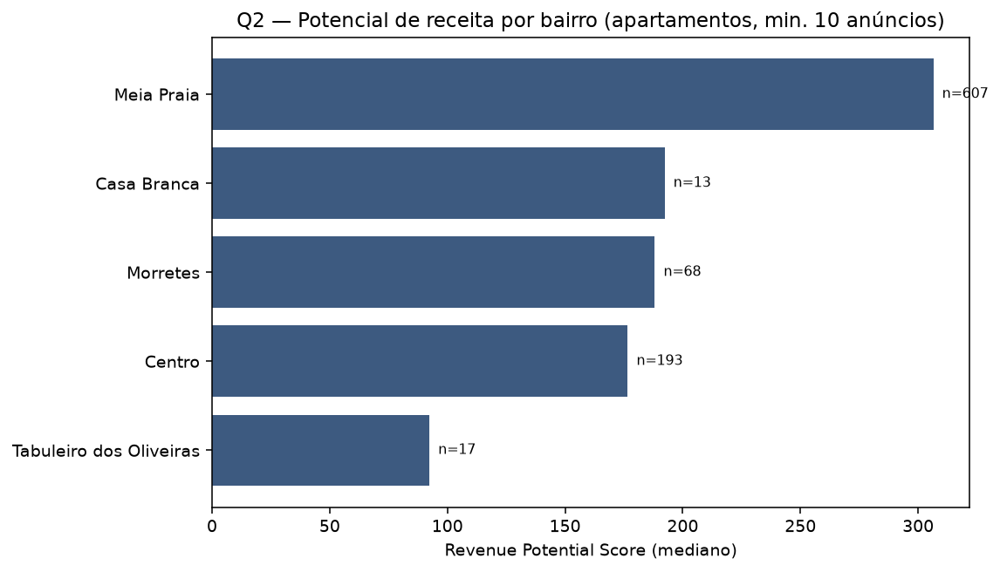
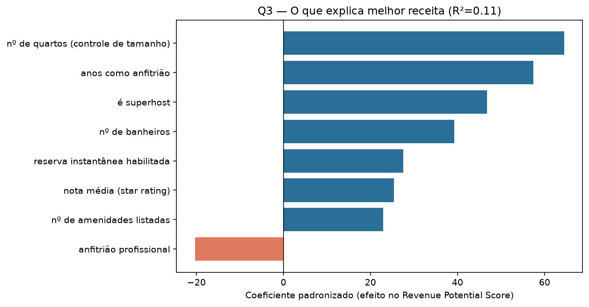

Onde e o que construir — apartamentos, análise em duas camadas independentes (tamanho e localização).
Não é uma incorporadora tradicional. Ela estrutura uma SPE por obra: investidores entram como sócios da construção, o terreno fica em nome da SPE, e cada obra é autofinanciada só pelos próprios investidores (ticket médio ~R$ 250 mil, parcelado 48–54 meses) — sem margem de incorporadora tradicional. Depois de pronto, opera as unidades como short stay via microfranquias (8% da receita de diária). A empresa já vende esse exato produto sob a marca "SPOT", com ticket público no marketplace — usado como preço real de custo para estimar retorno (seção abaixo).
Só constrói apartamentos — por isso toda a análise usa só
listing_type == "apartamento". Studio e 1 quarto foram unidos numa
categoria só: studio sozinho tinha só 8 anúncios com preço na cidade inteira.
Um terreno sustenta várias unidades — não é "1 terreno = 1 apartamento". O custo de terra é diluído entre elas, e o custo de obra por m² tende a ser parecido entre bairros da mesma cidade. Sem dado de quantas unidades cabem em cada terreno (depende de zoneamento/gabarito — que está mudando agora em Itapema, ver riscos), a métrica mais confiável é:
R$/m² = ADR mediano do Airbnb ÷ área útil mediana do apartamento pronto equivalente (VivaReal)
Terreno entra só como contexto de liquidez/execução (quantos lotes existem à venda), não como base de cálculo de retorno.

Studio/1 quarto rende quase o dobro por m² de qualquer outra tipologia — e esse padrão se confirma nos dois bairros com amostra suficiente para checar todas as tipologias (Centro e Meia Praia), não é artefato de um bairro só.
Usamos o preço real de um produto que a Seazone já vende — os SPOTs (apartamentos compactos de short stay, ticket público no marketplace) — como custo para estimar retorno sobre a nossa própria receita por m².
Comparável mais próximo: SPOT Ponta das Canas (Florianópolis/SC), 9 unidades de 1 quarto, 16,86–49,93 m² (mesma faixa do nosso Studio/1 quarto), ticket R$ 220.000–423.000 → R$ 8.472–13.049/m². A Seazone divulga 17,7% a.a. para esse SPOT específico (referência, não usado no cálculo).
| Cenário (preço do ticket) | Cap rate estimado |
|---|---|
| Unidade menor do comparável (R$ 13.049/m²) | 14,1% a.a. |
| Unidade maior, mais parecida com nossa área média (R$ 8.472/m²) | 21,7% a.a. |
Faixa: 14,1%–21,7% a.a. — cai dentro do que a Seazone declara para o produto SPOT em geral (13%–23% a.a., em 5 SPOTs pesquisados) e perto do comparável mais próximo (17,7% a.a.). Nosso cálculo é independente (receita 100% dos nossos dados), mas aterrissa na mesma faixa que o mercado já pratica. Só apartamentos compactos têm esse comparável real — a Seazone não vende SPOTs de 2+ quartos, mais uma evidência de que o mercado já validou a tese do compacto.

| Bairro | R$/m² (Studio/1q) | Amostra | Terrenos à venda |
|---|---|---|---|
| Meia Praia | R$ 12,12 | n=28 | 5 |
| Centro | R$ 10,71 | n=78 | 0 |
| Morretes | R$ 8,72 | n=4 (amostra pequena) | 76 |

Meia Praia tem o melhor R$/m² e o maior potencial de receita da cidade (Q2) — mas só 5 terrenos à venda hoje, pouco para escala, e tende a inflar o preço desses lotes escassos assim que alguém tentar comprar. Centro vem logo atrás (R$ 10,71/m², amostra robusta) e tem potencial de receita razoável — mas não há terreno listado hoje (ressalva de execução, não motivo de exclusão: vale prospecção off-market). Morretes tem de longe mais terreno disponível (76), mas a amostra de compacto lá é pequena demais (n=4) para confiar no número. Ilhota tem só 5 anúncios de apartamento com preço no Airbnb e 5 terrenos à venda — abaixo do corte de confiabilidade, dado insuficiente, não rejeição.
Não existe uma resposta única de bairro — depende da prioridade: retorno máximo por m² (Meia Praia, com escassez de terreno), retorno quase igual sem essa escassez confirmada (Centro, sem terreno listado hoje), ou execução em escala garantida agora (Morretes, sem confirmação de que compacto funciona bem lá e com risco regulatório documentado).
A hipótese a validar: "apartamentos compactos (studio/1 quarto) na região do Centro."
A parte "compacto" está fortemente confirmada — quase o dobro de receita por m² de qualquer outra tipologia, em dois bairros diferentes, e validada de forma independente pelo próprio mercado (SPOTs da Seazone, retorno real 13-23% a.a. só nesse formato). A parte "Centro" é competitiva, não descartável: R$ 10,71/m² é o 2º melhor da cidade, muito perto do líder.
O que a tese não previa: Meia Praia empata ou levemente supera o Centro tanto em receita por m² quanto em potencial de receita geral — vale considerar como alternativa de prioridade equivalente, com o mesmo tipo de ressalva de execução (lá por escassez de terreno, não por ausência dele).
Pesquisa externa (não está nos dados) — qualitativo, não ajusta os números acima.

Meia Praia lidera com folga (score 306, n=607). Centro fica em 4º lugar (score 177, n=193). Ilhota, Canto da Praia e Alto São Bento ficaram de fora por amostra insuficiente.

Após controlar o tamanho, os fatores com maior efeito positivo são: anos de experiência do anfitrião, ser superhost, número de banheiros, reserva instantânea, nota média e nº de amenidades. Anfitrião "profissional" tem efeito negativo.